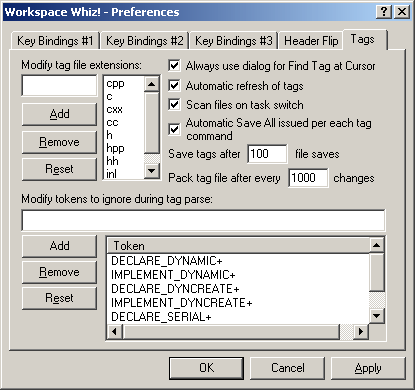

The Tags preferences are used to modify various tag compilation features.
The Modify tag file extensions: portion of the dialog allows assignment of all file extensions considered for tag compilation. Although the default extensions only provide support for C++ oriented files, Exuberant Ctags can also build tags from Java files, too.
The Modify tag file extensions: edit field is used to enter new extensions. The Add button will add the extension being edited to the end of the extension list. The Remove button will remove the currently selected extension. The Reset button will restore the Workspace Whiz defaults.
When finding the tag under the cursor, checking Always use dialog for Find Tag at Cursor will always show the Find Tag dialog with the matched symbols, whether there were any tag ambiguities or not. Tag ambiguities happen when there are more than one tag. If this field is unchecked and only one tag is found, it will be moved to instantly.
When Automatic refresh of tags is checked, source files are automatically scanned for changes by date/time stamp. For large number of files, this process can take a while. If unchecked, tags are never refreshed unless the Refresh Tags button in the Find Tag dialog is pressed.
When Scan files on task switch is checked, all files are checked when switching back to Visual Studio from another application.
When Automatic Save All issued per each tag command is checked, a File->Save All command is issued before each tag command. If it is unchecked, no files are saved, but the Find Tag dialog's Refresh Tags button will save the files and check for changes.
Saving tags can be a slower process, so it is only done according the amount in the Save tags after # file saves field.
Due to the new, faster tag system, tag files will continue growing larger and larger until packed. Workspace Whiz can automatically pack the tag files, but the packing process is not a quick process. The number of tags that must change before packing the tag file may be entered in the Pack tag file after # changes field.
Exuberant Ctags doesn't pay full attention to the syntax of the code it is parsing. In particular, #define macros aren't parsed. On occasion, macros cause problems when Exuberant Ctags parses the code. The Modify tokens to ignore during tag parse: field allows input of tokens that will be ignored.
The simplest format for an ignored token is just the token itself. By default, Workspace Whiz ignores the token DECLARE_DYNAMIC. A specialized form for ignoring tokens is actually a redefinition. For example, if the token CLASS was #define'd to be class in a section of code, the Workspace Whiz form would be CLASS=class. The final form is following the identifier with a + symbol. This causes source code that looks like a function to be ignored.
For further details, see the -I option in the Exuberant Ctags manual.